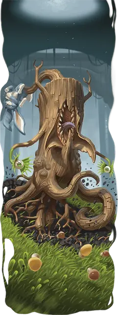

Волк-в-овечьей-шкуре
Wolf-in-Sheep’s-Clothing
Среднее Растение, без мировоззрения

Класс Доспеха 16 (природный доспех)
Хиты 112 (15к8 + 45)
Скорость 20 футов, лазая 20 футов
| мод | спас | ||
|---|---|---|---|
| СИЛ | 20 | +5 | +5 |
| ЛОВ | 9 | −1 | −1 |
| ТЕЛ | 16 | +3 | +3 |
| мод | спас | ||
|---|---|---|---|
| ИНТ | 5 | −3 | −3 |
| МДР | 12 | +1 | +1 |
| ХАР | 5 | −3 | −3 |
Навыки Восприятие +7, Скрытность +5
Иммунитет к состояниям сбивание с ног
Чувства тёмное зрение 60 футов, пассивное Восприятие 17
Опасность 7 (2900 опыта)
Бонус мастерства +3
Особенности
Обманчивая внешность. Если волк-в-овечьей-шкуре неподвижен к началу боя, то он совершает бросок Инициативы с преимуществом. Более того, если существо не видело перемещений или действий волка-в-овечьей-шкуре, то это существо должно преуспеть в проверке Интеллекта (Расследование) Сл 18, чтобы понять, что тот живой.
Действия
Мультиатака. Волк-в-овечьей-шкуре совершает одну атаку Укусом и две атаки Корневым щупальцем.
Укус. . Рукопашная атака оружием: +8 к попаданию, досягаемость 5 фт., одна цель. Попадание: 9 (1к8 + 5) колющего урона плюс 7 (2к6) урона кислотой.
Корневое щупальце. . Рукопашная атака оружием: +8 к попаданию, досягаемость 20 фт., одна цель. Попадание: 8 (1к8 + 5) дробящего урона. Если цель — существо Среднего размера или меньше, то оно становится схваченным (Сл освобождения 16). Пока цель схвачена подобным образом, она также опутана. В начале каждого хода волка-в-овечьей-шкуре тот может подтянуть цель на расстояние вплоть до 10 футов ближе к себе (действие не требуется). У волка-в-овечьей-шкуре есть четыре корневых щупальца, каждое из которых может держать в захвате только одну цель за раз.
Бонусные действия
Безобидная приманка. Волк-в-овечьей-шкуре может менять цвет, текстуру и форму своей приманки для того, чтобы та напоминала Крошечного Зверя или Крошечный объект.
Он также может двигать приманкой для того, чтобы усилить сходство (действие не требуется), но она должна находиться в пределах 15 футов от него, соединяясь с ним посредством почти невидимых нитевидных усиков.
Описание
Волк-в-овечьей-шкуре — это хищное растение, внешне напоминающее пень дерева. Оно прячется в местах с густой растительностью и обладает схожей с корой шкурой, стебельчатыми глазами, напоминающие лианы или засохшие цветы, щупальца, похожие на корни, и мясистый нарост на теле, которым оно приманивает добычу к своей клыкастой пасти.
Волки-в-овечьей-шкуре могут изменять внешний вид своих приманок чтобы изображать различных мелких, очаровательных существ для приманивая добычи. Таблица «Облики приманки» содержит примеры обликов, которые может принять приманка.
| к6 | Внешность приманки |
| 1 | Неуклюжий щеночек |
| 2 | Милый маленький кролик |
| 3 | Нарядная, улыбающаяся лягушка в маленьком цилиндре |
| 4 | Пушистый котенок |
| 5 | Лисичка с очаровательно большими ушками |
| 6 | Прыткий, танцующий рак |